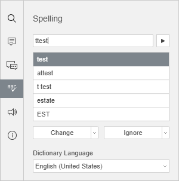
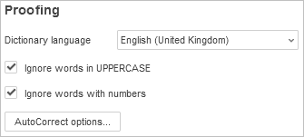

Provera pravopisa
Spreadsheet Editor vam omogućava da proverite pravopis teksta na određenom jeziku i ispravite greške tokom uređivanja. U desktop verziji je takođe moguće dodavati reči u prilagođeni rečnik koji je zajednički za sva tri editora.
Počevši od verzije 6.3, ONLYOFFICE editori podržavaju SharedWorker interfejs za lakši rad bez značajne potrošnje memorije. Ako vaš pregledač ne podržava SharedWorker, tada će biti aktivan samo Worker. Za više informacija o SharedWorker-u pogledajte ovaj članak.
Kliknite na ikonu Provera pravopisa na levoj bočnoj traci da biste otvorili panel za proveru pravopisa.

Gornja leva ćelija koja sadrži pogrešno napisanu vrednost teksta biće automatski izabrana u trenutnom radnom listu. Prva pogrešno napisana reč će biti prikazana u polju za proveru pravopisa, a predložene slične reči sa ispravnim pravopisom će se pojaviti u polju ispod.
Koristite dugme Idi na sledeću reč da biste se kretali kroz pogrešno napisane reči.
Zamena pogrešno napisanih reči
Da biste zamenili trenutno izabranu pogrešno napisanu reč predloženom, izaberite jednu od predloženih ispravno napisanih reči i koristite opciju Promeni:
- kliknite na dugme Promeni, ili
- kliknite na strelicu nadole pored dugmeta Promeni i izaberite opciju Promeni.
Trenutna reč će biti zamenjena i preći ćete na sledeću pogrešno napisanu reč.
Da biste brzo zamenili sve identične reči koje se ponavljaju u radnom listu, kliknite na strelicu nadole pored dugmeta Promeni i izaberite opciju Promeni sve.
Ignorisanje reči
Da biste preskočili trenutnu reč:
- kliknite na dugme Ignoriši, ili
- kliknite na strelicu nadole pored dugmeta Ignoriši i izaberite opciju Ignoriši.
Trenutna reč će biti preskočena i preći ćete na sledeću pogrešno napisanu reč.
Da biste preskočili sve identične reči koje se ponavljaju u radnom listu, kliknite na strelicu nadole pored dugmeta Ignoriši i izaberite opciju Ignoriši sve.
Ako trenutna reč nedostaje u rečniku, možete je dodati u prilagođeni rečnik koristeći dugme Dodaj u rečnik na panelu za proveru pravopisa. Ova reč se ubuduće neće smatrati greškom. Ova opcija je dostupna u desktop verziji.
Jezik rečnika koji se koristi za proveru pravopisa prikazan je na listi ispod. Po potrebi ga možete promeniti. Izabrani jezik će biti primenjen na celu tabelu. Kasnije će biti prikazan kao nedavno korišćen jezik i biće dostupan za brzi pristup u istom meniju. U desktop verziji, jezici instalirani zajedno sa vašim operativnim sistemom pojavljuju se na vrhu liste jezika za proveru pravopisa.
Kada proverite sve reči u radnom listu, na panelu za proveru pravopisa će se pojaviti poruka Provera pravopisa je završena.
Da biste zatvorili panel za proveru pravopisa, kliknite na ikonu Provera pravopisa na levoj bočnoj traci.
Promena podešavanja provere pravopisa
Da biste promenili podešavanja provere pravopisa, idite u napredna podešavanja Spreadsheet Editor-a (File kartica -> Advanced Settings) i skrolujte nadole do odeljka Proofing. Ovde možete podesiti sledeće parametre:

- Jezik rečnika – izaberite jedan od dostupnih jezika sa liste. Jezik rečnika na panelu za proveru pravopisa će biti promenjen u skladu sa tim.
- Ignoriši reči velikim slovima – označite ovu opciju da biste ignorisali reči napisane velikim slovima, npr. akronime kao što je SMB.
- Ignoriši reči sa brojevima – označite ovu opciju da biste ignorisali reči koje sadrže brojeve, npr. akronime kao što je B2B.
- Opcije automatske ispravke... – da biste saznali više o dostupnim opcijama automatske ispravke, pogledajte sledeći članak.
Da biste sačuvali izvršene izmene, kliknite na dugme Primeni.